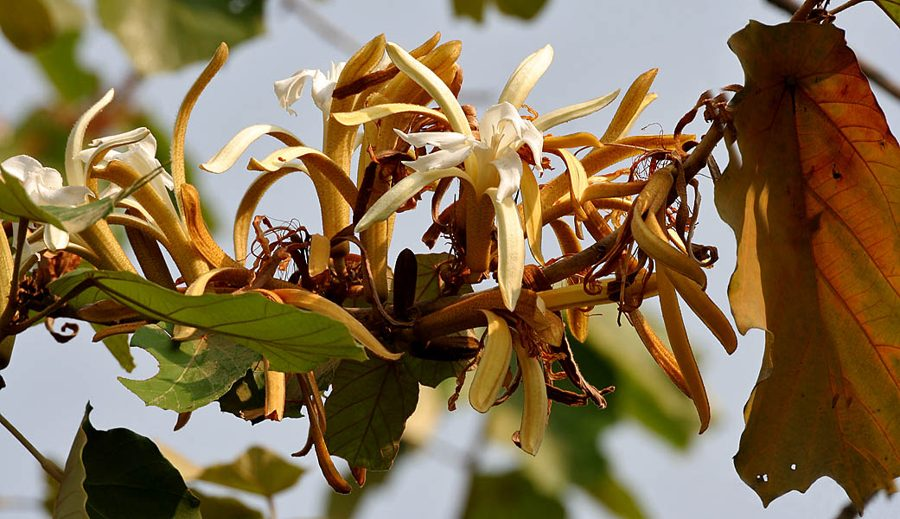

कनक चंपाBayur
Pterospermum acerifolium · Malvaceae · FLR-0294

- Scientific name वैज्ञानिक नाम
- Pterospermum acerifolium (L.) Willd.
- Family कुल
- Malvaceae
- Hindi हिंदी
- कनक चंपा
- Local names स्थानीय नाम
- bayur, kanak champa, muchkund, pterospermum
- Status here यहाँ की स्थिति
- native
- Movement आवागमन
- Resident, here all year
- Known from कहाँ दर्ज
- Others have published records from the wider Awadh–Purvanchal plain, none yet from Basti–Ayodhya अवध–पूर्वांचल से दूसरों के प्रकाशित अभिलेख, बस्ती–अयोध्या से अभी नहीं
- IUCN IUCN
- not evaluated
- Review समीक्षा
- audited and independently read
When to look कब देखें
Present all year. साल भर मौजूद।
Uses and possibilities उपयोग और संभावनाएँ
Drawn from the documented uses in the profile below, where each is labelled traditional, current or a research lead. All uses →
Tell it apart from इनसे अलग पहचानें
कनक चंपा / Bayur
Pterospermum acerifolium (L.) Willd. — Malvaceae
कनक चंपा — एक सुंदर, मध्यम आकार का पर्णपाती वृक्ष जो पूर्वी उत्तर प्रदेश के वनों की सीमाओं में पाया जाता है। इसकी पत्तियाँ मेपल की पत्तियों जैसी, दिल के आकार की, और बड़ी होती हैं। फूल सुगंधित, सफ़ेद और नारंगी रंग के, पखुड़ियों में पतली सी लकीरें लिए होते हैं। यह पेड़ गर्मी के आखिरी और सर्दी की शुरुआत में फूलों से लदा होता है, और फूलों की खुशबू दूर तक फैलती है।
Quick Identification त्वरित पहचान
| Feature | Description |
|---|---|
| Size | Medium deciduous tree, 10–20 m tall with a straight trunk and spreading crown |
| Leaves | Maple-like, ovate to suborbicular, 15–25 cm long, deeply 3–5 lobed, cordate base |
| Flowers | Large, fragrant, white with orange/reddish bands on petals, 7–10 cm |
| Fruit | Elongate winged capsule, 10–15 cm long, splitting to release winged seeds |
| Bark | Pale grey to brown, smooth on young trees, becoming rough with age |
| The test | Large maple-like lobed leaves and fragrant white-and-orange flowers identify it unmistakably |
Field tip: Along river banks and forest edges in the tarai region, look for a tree with large, deeply lobed leaves resembling a maple tree. The fragrant white flowers with orange streaks appear in spring and are highly distinctive. The long winged fruits develop by mid-year.
हिंदी — कैसे पहचानें: बड़ी, मेपल जैसी पत्तियाँ जिनमें गहरी लकीरें हों। सफ़ेद फूलों में नारंगी रंग की धारियाँ। फूलों की तीक्ष्ण खुशबू।
Morphology आकारिकी
Biometrics (sal and moist deciduous forest trees, northern India):
| Measurement | Range |
|---|---|
| Height | 10–20 m |
| Trunk diameter | 30–60 cm |
| Leaf length | 15–25 cm |
| Leaf lobes | 3–5, prominent |
| Flower diameter | 7–10 cm |
| Fruit length | 10–15 cm |
Trunk and bark: Straight, with smooth pale grey to brown bark on young trees, becoming rough and flaking with age. Sapwood pale yellow, moderately hard.
Leaves: Alternate, deciduous, deeply palmately lobed with 3–5 lobes, cordate at base, 15–25 cm long. Margin serrate. Leaves bright green above, paler and hairy beneath. Petiole 2–5 cm.
Flowers: Large, fragrant, occurring singly in leaf axils. Five petals, white with characteristic reddish-orange bands radiating from the base. Stamens numerous. Flowers appear February to April before new leaf flush.
Fruit: An elongate, woody, winged capsule 10–15 cm long, with the persistent style forming a long beak. Seeds flattened, winged, wind-dispersed. Capsule splits into five valves, releasing seeds August to October.
हिंदी: पत्तियाँ बड़ी, हृदय-आकार की, गहरे टुकड़ों में बँटी। फूल बड़े, सुगंधित, सफ़ेद और नारंगी। फल लंबा, पंखदार।
Behaviour & Ecology व्यवहार और पारिस्थितिकी
Bayur is a tree of the tarai and forest margins where rainfall is moderate to high and soil is well-drained but moisture-retentive. It is deciduous in the dry season, leaf fall occurring in March. The tree is a notable early flowerer, blooming in late winter when few other forest trees flower, providing nectar for early-season pollinators. The fragrant flowers attract bees and other insects. The winged seeds are dispersed by wind, though the weight means they do not travel far from the parent tree.
हिंदी: गीली और मिश्रित जंगलों के किनारे पाया जाता है। सर्दी में फूल खिलते हैं जब और पेड़ सो रहे होते हैं। खुशबू दूर से मधुमक्खियों को आकर्षित करती है।
Life Cycle / Phenology जीवन चक्र
| Month / season | Event |
|---|---|
| February–April | Flowering with fragrant white and orange flowers |
| April–May | Petal fall; ovary swells |
| June–July | Fruit development through monsoon growth |
| August–October | Mature fruits split and release winged seeds |
| November–February | Dormancy; gradual leaf fall March–April |
| 8–10 years from seed | First flowering |
Seeds germinate readily in monsoon with plenty of moisture. Seedlings grow quickly. Lifespan reaches several decades.
हिंदी: फरवरी-अप्रैल में फूल। मई में गिरना शुरू। अगस्त तक फल तैयार। अक्टूबर तक बीज गिरते हैं। मार्च में पत्तियाँ झड़ जाती हैं।
Associated Species / Interactions संबंधित प्रजातियाँ
- Flowering companions: Blooms alongside Sal and other early-season forest trees.
- Seed dispersal: Seeds are wind-dispersed and establish in forest clearings.
- Pollinator magnet: Attracts Asian Honey Bee and other bees in spring.
Pests and Diseases कीट और रोग
- Leaf-eating caterpillars in monsoon, rarely severe on mature trees.
- Wood-borers may attack dead or damaged branches.
- No significant fungal diseases in normal conditions.
Agricultural / Human Relevance कृषि प्रासंगिकता
Bayur is primarily valued for its ecological role and aesthetic appeal. In eastern Uttar Pradesh it is found in natural forest reserves and occasionally in temple groves. The wood is used for various purposes by local communities, though the tree is not commercially harvested. The fragrant flowers make it a candidate for ornamental planting in suitable forest-edge habitats.
हिंदी: जंगलों में सुंदरता के लिए इसे रखा जाता है। लकड़ी स्थानीय काम में आती है। फूलों की खुशबू इसे प्रसिद्ध करती है।
Expected Locally स्थानीय रूप से अपेक्षित
Not a field record. Written from published accounts for eastern Uttar Pradesh. No confirmed local sighting yet — if you have seen it, that is what the atlas needs.
अभी तक स्थानीय पुष्टि नहीं। यह विवरण प्रकाशित स्रोतों से है, किसी अवलोकन से नहीं।
GBIF holds published records from the wider Awadh–Purvanchal plain. Bayur is expected in moist deciduous forests and forest margins of the lower tarai belt in eastern Uttar Pradesh. Trees may persist in sacred groves and along river margins. Look for the distinctive maple-like leaves and fragrant white flowers with orange markings in February–April.
Distribution वितरण
Global range: Distributed across the Indian subcontinent from the Himalayan foothills through the Gangetic plain to the Deccan, from sea level to about 1,500 m.
In India: Widespread in moist deciduous forests and forest margins, particularly in the Indo-Gangetic region, including tarai and bhabar zones.
In Uttar Pradesh: Scattered in the eastern forests and tarai region; established in some sacred groves.
In Basti district / eastern UP: Expected in natural forest remnants and river-side habitats of the tarai zone, though exact distribution not yet documented.
Research Questions शोध प्रश्न
- How far do the winged seeds of Bayur disperse from parent trees? — Collect fallen seeds and mark those that germinate far from the source.
- Which insect species visit the flowers, and in what order during flowering season? — Observe flowers for 30 minutes morning and evening from February to April.
- How does Bayur flowering timing correlate with the end of winter? — Record first-flower dates over several years; compare with temperature and rainfall records.
- क्या बयूर की पत्तियाँ कोई विशेष कीट खाते हैं? — पत्तियों पर छेद के निशान देखें; छेद करने वाले कीटों को इकट्ठा करें।
- What is the natural regeneration rate of Bayur seedlings in forest clearings? — Monitor a forest clearing for seedling establishment over monsoon seasons.
Similar Species मिलती-जुलती प्रजातियाँ
| Species | How to tell apart | हिंदी |
|---|---|---|
| Kachnar (Bauhinia purpurea) | Bilobed leaves (not 3–5 lobed); pink flowers | पत्तियाँ दो भागों में बँटी; गुलाबी फूल |
| Peepal (Ficus religiosa) | Heart-shaped leaves, not lobed; fig fruits, not winged capsules | दिल के आकार की पत्तियाँ; अंजीर जैसे फल |
| Maple (Acer spp.) | Not found naturally in region; more deeply lobed leaves | केवल बाग़ों में; और भी गहरी पत्तियाँ |
Field rule: A forest tree with large, distinctly maple-like lobed leaves and fragrant white flowers with orange bands, appearing in spring when most other forest trees are still leafless, is Bayur.
Taxonomy & Classification वर्गीकरण
Original description. Originally described by Linnaeus in 1753 as Eriodendron acerifolium based on specimens from India. Later placed in Pterospermum by Willdenow. Type locality is India.
Subspecies. Monotypic — no subspecies are currently recognised.
Family and order placement. Order Malvales, family Malvaceae (the mallow family, including okra, cotton, and related plants). The genus Pterospermum contains about 20 tropical Asian species characterised by the elongate winged fruit.
Phylogenetic notes. Pterospermum acerifolium is the type species of Pterospermum and represents a tropical Asian lineage within the broader Malvaceae radiation.
IUCN status rationale. Not evaluated. The species is widespread in suitable habitats across its range and is not considered threatened, though local populations in eastern UP have declined with forest loss.
Photo Gallery फोटो गैलरी
No photos yet — add field photos to media/species/bayur/ and run node scripts/sync_photos.js.
Wanted photos:
- Whole tree in forest setting
- Maple-like leaves with lobes clearly visible
- Fragrant white and orange flowers
- Mature winged fruits on tree
- Seeds dispersing from capsule
References संदर्भ
- Willdenow, C.L. (1799). Species Plantarum (4th edn). G.C. Nauk, Berlin. Vol. 3. [original description as Pterospermum]
- Hooker, J.D. (1874). The Flora of British India. Vol. 1. L. Reeve & Co., London.
- Duthie, J.F. (1903). Flora of the Upper Gangetic Plain and of the Adjacent Siwalik and Sub-Himalayan Tracts. Vol. 2. Government Printing, Calcutta.
- Gamble, J.S. (1922). A Manual of Indian Timbers. Sampson Low, Marston & Co., London.
- Sahni, K.C. (1998). The Book of Indian Trees. Oxford University Press, New Delhi.
- GBIF Occurrence Data — Pterospermum acerifolium, India.
Source file: species/flora/trees/bayur.md